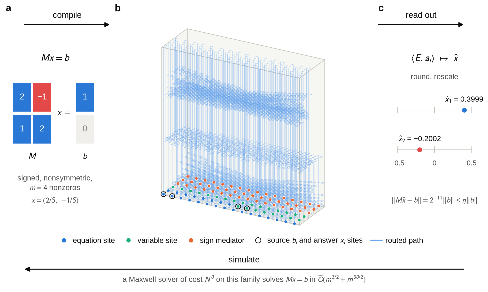

2026 has been a strange year for mathematics. In September, OpenAI announced that one of its internal models had produced a proposed solution to the Navier–Stokes problem, one of the seven Millennium Prize Problems; the Clay Mathematics Institute is still reviewing it. Earlier this week, OpenAI announced that its models had refuted the Exponential Time Hypothesis (ETH), a widely used conjecture in theoretical computer science, and experts are checking that proof right now. Whatever the final verdicts, it is clear that AI systems can now produce long, serious mathematical arguments, and that the bottleneck is shifting from finding proofs to checking them.
This post is about a much smaller result. It started as a bit of curiosity about optical computing and about electromagnetic simulation, which I like a lot (I work at Flexcompute, after all).
Where this started
The ETH news got me thinking about its cousins. ETH is a statement of the form “this problem can not be solved faster than some bound”. There is a similar hypothesis for linear algebra, the Sparse Linear Equation Time Hypothesis (SLTH). Roughly, it says that general sparse linear systems Mx = b can not be solved faster than some exponent of their size, no matter how clever the algorithm.
In the frequency domain, discretizing Maxwell's equations on a grid or a volume mesh, as finite-difference and finite-element solvers do, turns a photonic device into a sparse linear system with millions or billions of unknowns. So I was curious: could there ever be a Maxwell solver that runs in near-linear time? That would be absolutely wild: the cost of a solve would grow only in proportion to the size of the device, regardless of how resonant or complicated it is, so a device ten times larger would take about ten times longer, and full-wave simulation and inverse design of entire systems, not just their components, would become routine. For some structured problems this actually happens. Graph Laplacians, i.e., the systems behind diffusion and electrical networks, can be solved in nearly linear time. For wave problems, the folklore is that this can not be done, but as far as I know nobody had ever turned that folklore into a statement.
There is a standard way to make such a statement: show that the structured problem is secretly as hard as the general one. If you can translate any sparse linear system into a Maxwell problem, cheaply, then a fast Maxwell solver would be a fast general sparse solver. People have done this for other physical systems, e.g., for the stiffness matrices of trusses, but not for light.
The optical computing side
The same translation answers a question from the other direction. Optical analog computing has been having a moment: metamaterials that solve integral equations, photonic circuits that invert matrices, optical neural networks. Reading these papers, I had often wondered which problems a piece of passive optical material can actually represent. And what would it cost, once you count everything, i.e., how big the structure must be, how precisely you must build it, and how hard it is to write the problem in and read the answer out? The demonstrations encode a fixed kernel or a matrix with a handful of entries, so they do not answer this.
Both questions, the solver one and the optical computing one, are really the same question: how expressive is a dielectric?
The answer
Here is what we now know. Take any sparse linear system Mx = b with m nonzero coefficients. The matrix can be nonsymmetric, its entries can have either sign, and its sparsity pattern can be anything; we only ask that it is reasonably well-conditioned, i.e., that its condition number grows at most polynomially with m. Then there is a compiler that turns it into a three-dimensional dielectric structure inside a metal box1, together with a source and a list of field measurements, such that:
- every electric field that approximately solves Maxwell's equations in that structure gives you an approximate solution of Mx = b;
- the material is completely ordinary: lossless, isotropic, with a permittivity between 1 and 252, i.e., roughly the range from air to common high-index ceramics, with no metals inside and no exotic metamaterial properties;
- the size of the structure, the work of writing it down and the work of reading out the answer all grow like m3/2, up to logarithmic factors.3

That last point is what makes it a real statement and not a trick. Anything can be “computed by physics” if you are allowed to hide the work in an uncounted step, e.g., an infinitely precise material or a measurement with unlimited resolution. Here, everything is counted: the whole box including empty space, the bits in every material coefficient (only logarithmically many), the conditioning of the full electromagnetic problem, and the cost of decoding.
How it works, roughly
If you have worked with photonic crystals, the mechanism will look familiar. The background is a weakly modulated periodic dielectric (the strip at the top of this page). Raising the permittivity slightly over a broad region creates a localized mode, much like a defect cavity in a photonic crystal. Each unknown of the linear system lives in the amplitude of one such mode, and neighboring modes couple through their overlapping tails, which gives you a tight-binding network written in glass.
Two problems have to be solved to make this work for arbitrary equations. First, a reciprocal dielectric only gives you symmetric couplings of one sign, while the matrix is arbitrary. This is solved at the algebra level: the system is embedded in a larger symmetric one, and extra “mediator” modes produce couplings of either sign once you eliminate them. Second, an arbitrary sparse matrix connects variables in an arbitrary pattern, while physics is local. So the network is routed through 3D space like wires on a chip, and that is where the m3/2 comes from: it is the same volume Kolmogorov and Barzdin found in 1967 for packing an arbitrary network of wires into three dimensions.4
The hard part, and most of the 80 pages of supplementary math, is controlling everything this tight-binding picture ignores: all the other electromagnetic modes, the leakage of the defect modes into them (there is no complete band gap here), the accumulated effect of millions of tiny unwanted couplings, the metal walls, and the resonances of the box. The proof shows that all of these errors can be pushed below what the algebra needs, with only logarithmic overhead.
A small one to play with
The theorem is about very large systems, but you can already see the mechanism in a tiny one. Below is a numerical example: a metal box filled with the same kind of periodic dielectric, with six defects that together encode the signed 3×3 system
Three defects (T1–T3) are where the input b goes in and the answer x comes out. The other three (A1–A3) are only there to shape the couplings. Every field you see comes from a full-vector Maxwell solve of the whole box, about 380,000 unknowns, with nothing reduced or filtered out. Pick an input and step through it: the material, the source that writes b in, the field the cavity settles into, and the overlaps that read x back out. In the 3D view you can drag to rotate. The decoded answer solves Γx = b to within 0.08% for every input.5
Loading the solved fields…
What it means
For optical computing, this is a positive and a sobering answer at the same time. Positive: a passive, ordinary dielectric loses no generality, it can represent any well-conditioned sparse linear system. Sobering: this says nothing about speed. The construction is an ideal lossless cavity at a single frequency, and the time and energy to get it into its steady state and measure it, fabrication errors, absorption and noise are all outside the theorem.
For Maxwell solvers, the result puts a ceiling on what a general-purpose solver can achieve. Encode, solve, decode: a solver that handles all of these structures in time Nθ, with N the size of the structure, solves sparse linear systems in time m3θ/2 (up to logarithms, and as long as it is not slower than encoding). The best known algorithm for sparse, well-conditioned systems runs in about m2 bit operations. So a general Maxwell solver with θ < 4/3 would beat every known sparse linear solver. If SLTH holds in its strongest form6, no such Maxwell solver exists. Fast solvers get their speed from structure that real devices have, e.g., smooth geometry, absorbing boundaries or moderate quality factors, and that these worst-case cavities do not have.
Note that the translation itself needs no hypothesis. SLTH only enters when you turn it into a lower bound on solvers.
How it was made
The constructions, the proofs and the computer-assisted certificates were produced by AI systems (OpenAI Astra 6 in ChatGPT and in the Codex app, and Claude Opus 5.5 in Claude Code). My part was the question, the requirements, steering when an approach went nowhere, and insisting that every cost is counted. The proofs were then audited by independent AI reviewers7, and the finite certificates are machine-checked.
Most of it happened overnight, with some massaging in the evening before and the morning after. The question sits between photonics, spectral theory and complexity theory, and without AI it would most likely have stayed a passing thought.
So what is the point?
Anyone who has spent time in academic publishing knows that the system has been strained for a while. AI strains it further. The parallel to software is obvious: code can now be produced faster than anyone can reasonably review it, and the same is now true for proofs. This paper took a night to generate, and checking it carefully will take people far longer than that. We seem to be on some kind of exponential, but it is not clear to me what exactly is growing. It is not really a knowledge explosion, or a technological singularity, if nobody is able to absorb and build on what is being produced.
It also changes what it means to put a name on a paper. Traditionally, authorship is about credit: you did the work, so you get the recognition. Here, putting my name on the paper is much less about credit and much more about taking responsibility for its content. The work is not really mine, in the sense that I did very little of it. I had some ideas and things I wanted to explore, and now I have answers that came out of something close to an oracle. That takes some time to digest, and I expect it will take a long time for academic norms to catch up.
To be clear, the math in this paper is well beyond my own math chops. I understand the construction and the physics behind it, but I could not have written these proofs myself. So it is a fair question what the point of all this is. Not long ago, a result like this would have been a significant achievement, maybe even part of the theoretical foundations of a broad field. What it is now, when it took one night and someone who could not have done it alone, nobody knows.
Nonetheless, or maybe exactly because of that, I think these results are worth sharing. Tokens were spent to produce them, and if nothing else they should add to what the field knows. The same struggle is playing out at a much larger scale with the proofs OpenAI has been generating, which will take humans orders of magnitude longer to dissect and digest than it took to produce them.
What I do not intend to do is submit this to a journal. Journals are already swamped with AI-generated papers, and this one would just add to the pile. Nobody has the time or the energy to referee a hundred pages of spectral theory and complexity theory that took a night to produce. Which, again, raises real questions about the future of academic publishing.
We live in interesting times.
The paper, with the full proofs in the supplementary information, is on arXiv: arXiv:2610.38913. Code, data, certificates and the Lean development are on GitHub.